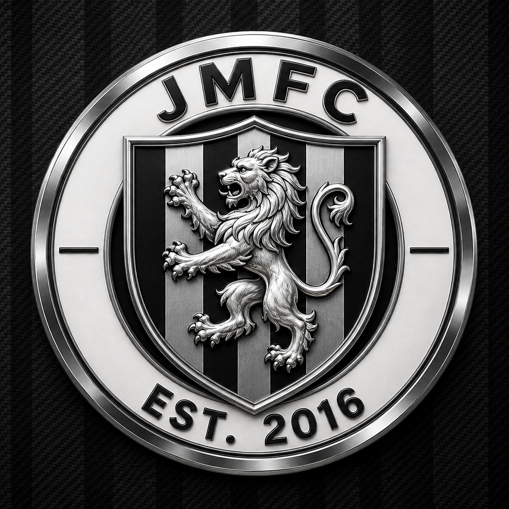

MVP 상단정렬 · C 표시 · 버튼 라벨/글씨크기 통일
GitHub 링크로 열 때 중간에 「Open the page」가 나오면 한 번 더 누르세요.
로컬에서는 이 페이지(index.html)에서 아래 카드를 누르면 됩니다.
MVP 상단고정 · 선수표 C 표시 · 경기의 시작 / 경기시작 · 글씨크기 통일
jmfc-session · UI Fix동일 UI Fix 반영 · 새 경기시작 → 경기의 시작
jmfc-compact · UI Fix정적 플로우 목업 · v6.6
jmfc-mockup.html · v6.6v6.4 TEAM RED/BLUE/YELLOW 명칭 통일
jmfc-process.html · v6.4메탈릭 엠블럼 PNG · EST. 2016 · 헤더 적용 예시
jmfc-logo-preview.html초기 UI 탭 스타일 비교용
abc-tabs-preview.html… 제거, 득/도/수/선/MP 폭 축소 → C 표시